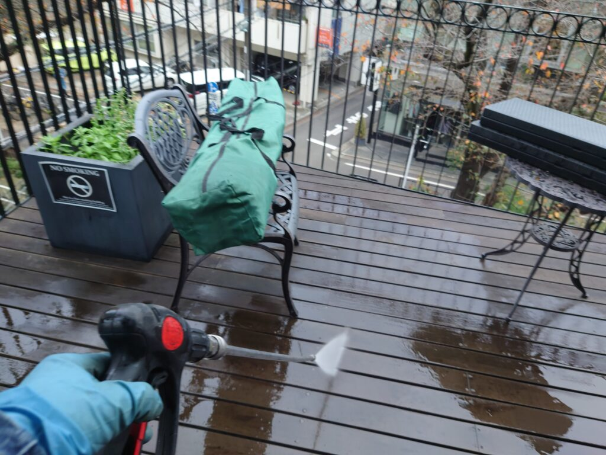
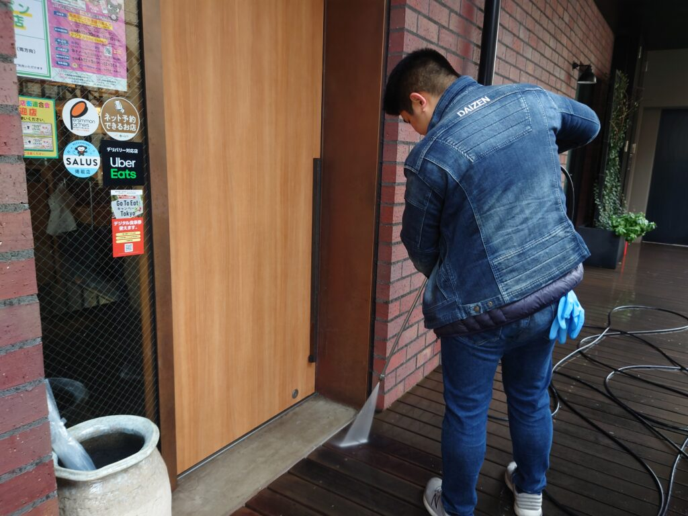
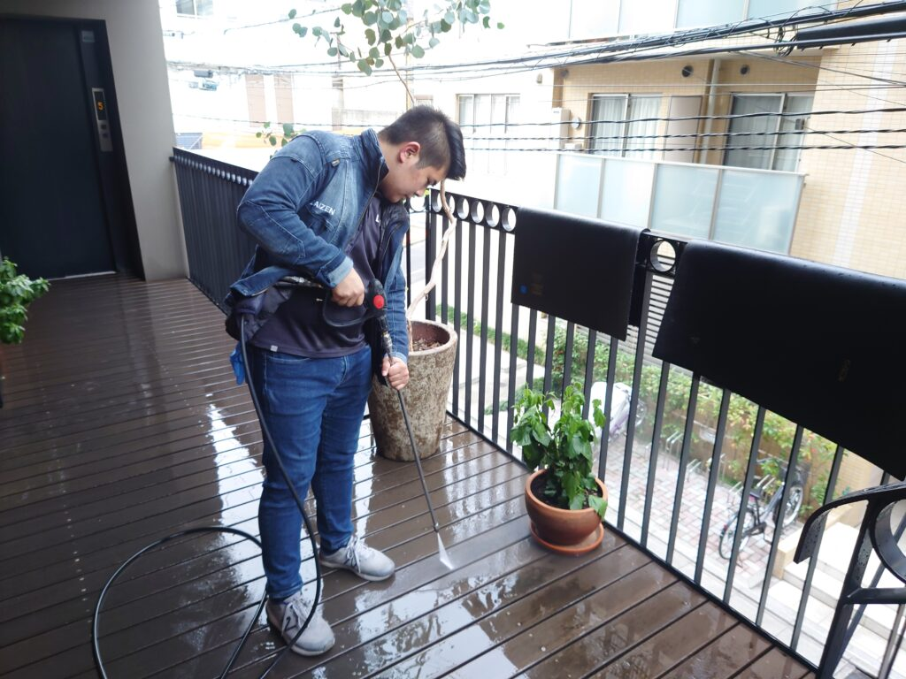
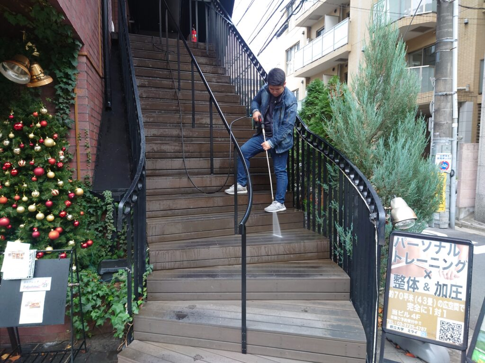
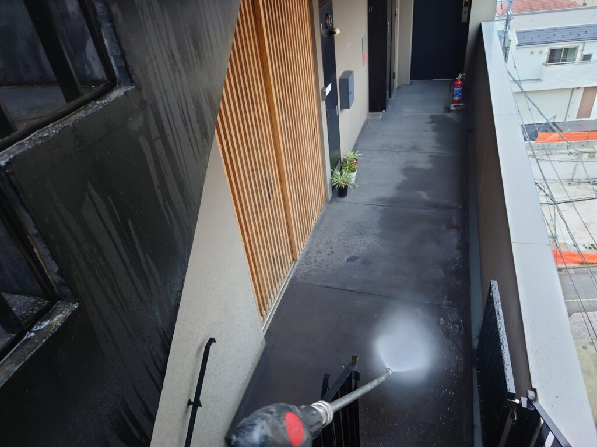
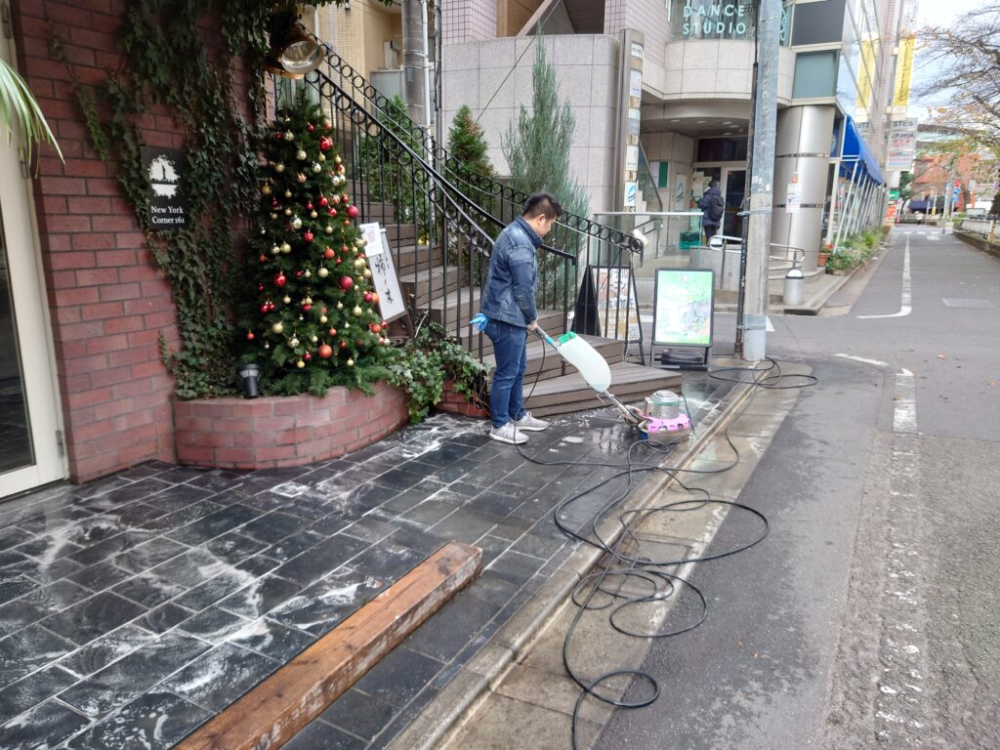
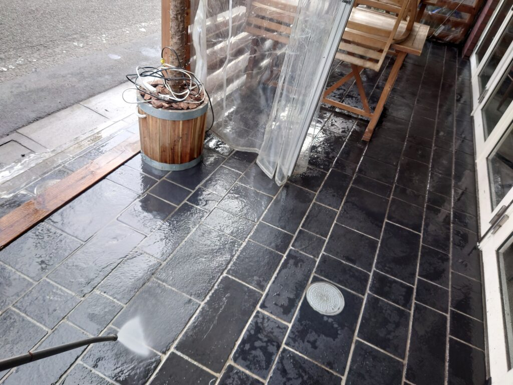
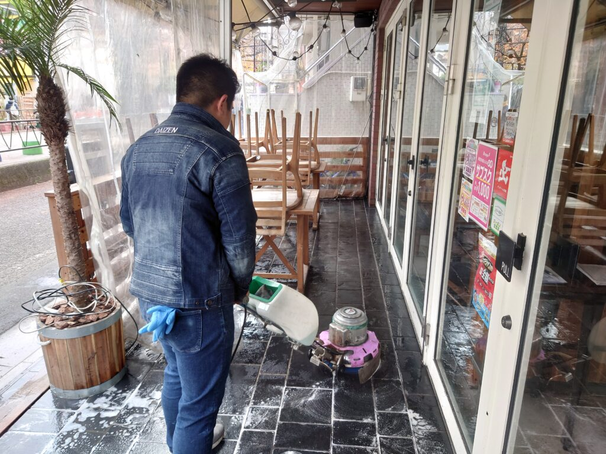
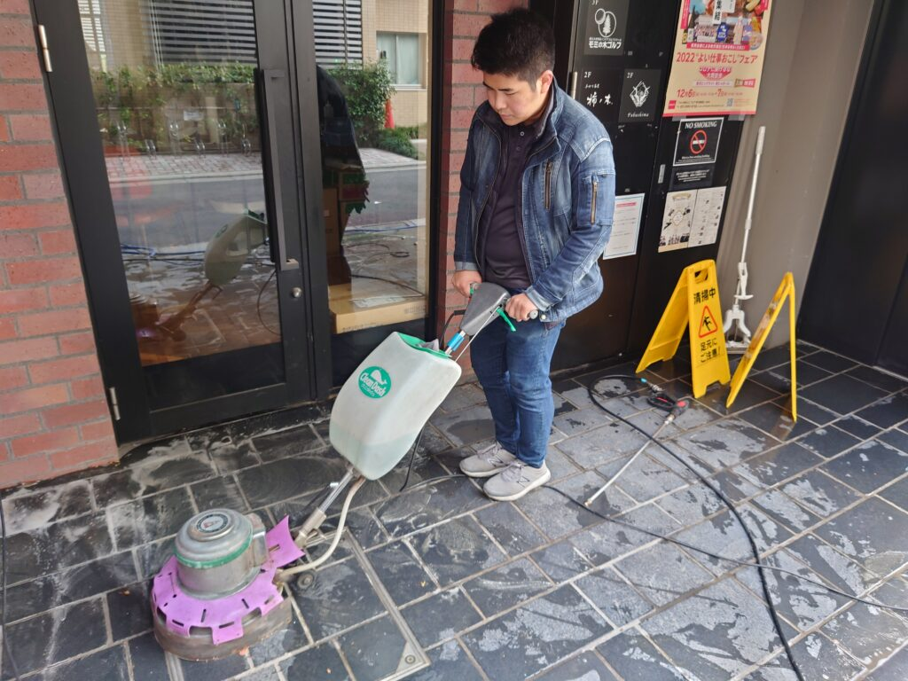

目黒区都立大学駅前、S様テナントビルクリーニングをしました!









目黒区都立大学駅前の、デザインが美しいテナントビル様の床洗浄、外階段高圧洗浄、ウッドデッキ高圧洗浄、店舗アプローチ、エントランスの洗浄クリーニングをしました。建物の色合いが濃い目なので、気付きにくいのですが、外階段、床の隅、ウッドデッキに堆積汚れが有り、普段の清掃ではなかなか除去出来ない汚れをDAIZENプロフェッショナルクリーニングメソッドで洗浄クリーニングして解決しました。専用薬剤に何を用いるかで仕上げに差が出ますので、DAIZENプロフェッショナルクリーニングメソッドで経験豊富な成功パターンから、アルカリ性、塩素系の薬剤で、カビ汚れ系に実績のある薬剤と、油脂汚れ系に実績のある薬剤を順番に用います、多くの成功パターンから希釈率を的確にチョイスして使用します。普段のビルクリーニング、マンションクリーニング、飲食店ハウスクリーニング、で多くの成功経験が有る為それら作業のいいとこ取りハイブリッドクリーニングを実施していきます。約4時間の洗浄クリーニングで建物のてっぺんから1階入口の隅々までスッキリ綺麗になりました!
大掃除でも、定期清掃でも、単発のワンショット強化清掃でも多くの成功パターンがございますので、ぜひお試し下さい！